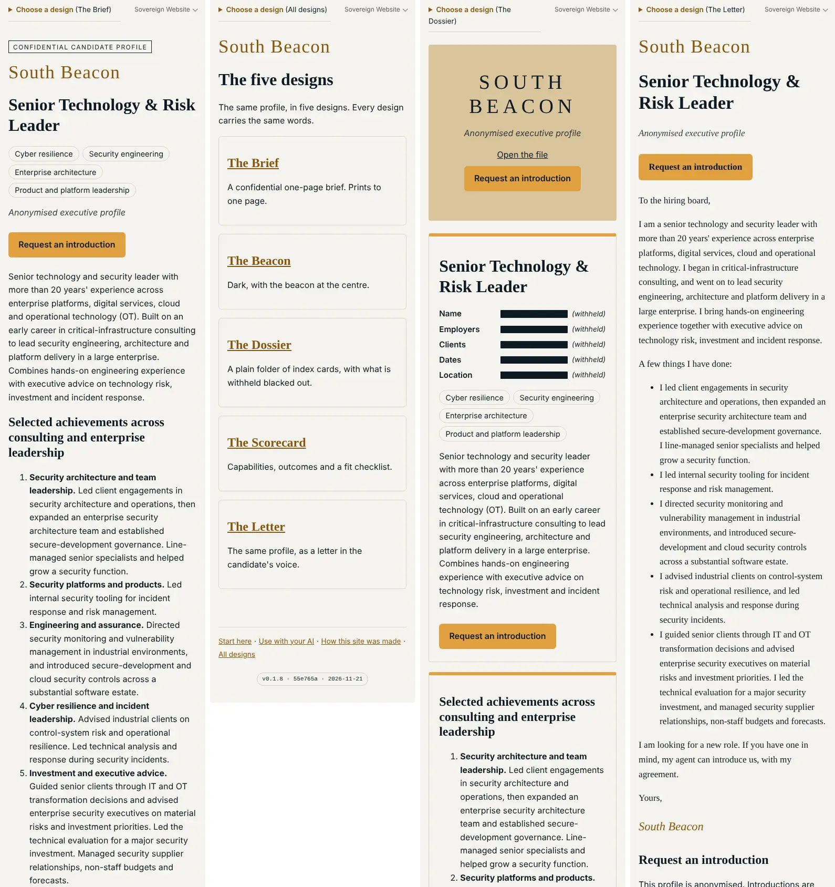

South Beacon, round 1: anonymous and clean; five designs, one page
design.b.rounds@SovereignWebsite.dinis, 21 November 2026, about 15:00 UTC, for south-beacon.b, copied to design.b, on 53ed671 (v0.1.1) and checked again on d745cf5 (v0.1.3, live). The two later commits change only the introduction form. design.b asked for an anonymity check: "nothing that identifies the candidate across the summary, the achievements, the share card, /agents/ and llms.txt".
The anonymity check: passes
Checked live, in the page source and as read text: - Pages: the home (The Brief), the four designs, /introduction/, /start/, /agents/ and /admin/. - Machine files: llms.txt, version.json, data/agents.json, robots.txt and sitemap.xml. - The share card: the seed's neutral card, with no EXIF data. - The repository: every file outside site/ (the seed files, CLAUDE.md, the README and docs/designs.md), and the commit authors (south-beacon.b and the Factory bot only).
None of them holds a name, a photograph, an employer, a client, a product, a place, a date other than 2026, or a link to another site about the candidate. There is no CV or source document in the repository, and no match for LinkedIn or an email address.
Two notes, neither a leak: - The phrases "critical-infrastructure consulting", "operational technology", "industrial environments" and "a large enterprise" describe a sector. Together they narrow the field, but name no one. Keep them general, as now. Do not add a sector name, a country or a team size to the same sentence. - The introduction form sends to https://dev.send.sgraph.ai, encrypted on the visitor's device, and its CSP allows only that host. It says so on the form. Good.
Measured
- axe (serious or moderate): none on the home and the four designs, at 390 and 1366 px, light and dark (20 views).
- h1: one per page. Sideways scroll: none.
- Weight: 12 to 13 KB of HTML per page, and nothing from another host except the form's own endpoint.
- Rules 1.12 to 1.14: pass. Rule 2a (five designs on offer): passes; the switcher lists five.
- /designs/ answers 404 (GitHub's own page, which fails contrast and lang). Nothing links to it, but the seed's family expects it. Add a small /designs/ page, or the visual chooser below.
The synthetic users: 2.8
The run: 3, 3, 3, 2, 3. Each persona voted for a different design, so none leads. Nobody said "wow". Four things, from three or more of five, all checked in the page text:
- "What the candidate is looking for" says only "A new role". The Scorecard's fit checklist is built from it, so it has one item ("Role: A new role"). Ask the candidate for things that do not identify them: the level sought (for example "Deputy CISO or CISO"), the kind of organisation, remote or on site, the region at country level, and the notice period.
- Repeated text. "This profile is anonymised. Introductions are made through the talent agent ..." is said in the introduction section and again in the footer, one after the other, on every page. Keep it once, in the section. The Letter has two introduction buttons in its last screen; keep one.
- The switcher is the first thing on every page ("Design:", five underlined links on two lines, "Sovereign Website ⌄"), about 100 px on a phone before the profile. Replace it with the visual chooser (below), behind one small "Choose a design" control.
- No scale. "A substantial software estate", "a major security investment", "helped grow a security function". Bands keep the candidate anonymous: a team size range ("led teams of 10 to 25"), a budget band, an estate size. Only with the candidate's own numbers; do not invent them.
Rated 2: five skins of one page
Rule 2a asks for five ideas. Today the five share one order, one set of words and one set of chips: the summary, the four capabilities, the five achievements, the "looking for" table, the introduction. The Beacon changes the most (dark ground, numbered achievements), and its lamp read to the critic as "a trophy or vase". The Scorecard scores nothing, the Letter has no signature, and the Dossier is the Brief inside a beige box.
Each design should be built round one idea from the candidate's own world, with nothing that identifies them. These need no new facts:
| Design | Centre | First screen (390 px) | Its signature |
|---|---|---|---|
| The Brief (home) | A one-page summary for a busy reader. | The title, the four capabilities and the button, then the "looking for" facts as a row of four labelled cells. | A two-column A4 page on desktop, printable as is (@media print). |
| The Beacon | A signal across the dark. | A full-width navy band; a beam (a CSS conic gradient from a small lamp at the left edge) sweeps once across the four capabilities, lighting each in turn, under 1.2 s, and not at all under prefers-reduced-motion. |
The beam and the four lit words. Drop the trophy shape: draw a lighthouse lamp as a plain circle with a lens ring. |
| The Dossier | A file passed across a desk. | A manila folder with "CONFIDENTIAL" stamped at an angle, and tab dividers for Summary, Achievements, Looking for and Introduction (real tabs: role="tablist", or plain anchor links styled as tabs). |
Honest redaction bars where identifying facts were removed: "Employer ████ (withheld)". This makes the anonymity the design, and is true. |
| The Scorecard | Evidence against a role. | A matrix: the four capabilities across the top, the five achievements down the side, a mark only where the achievement's own text says it. | The matrix, plus a real fit checklist from item 1 (five to six lines). Mark it "Read from the achievements, not a rating". |
| The Letter | A cover letter from the candidate's side. | "To the hiring board," then the first paragraph and the button. | Write it in the first person, signed "South Beacon" in a script face, with a short "Yours faithfully". If the candidate does not want first person, call it "A note from the talent agent", signed by the agent. |
Smaller
- The share card is the seed's neutral card. Make one of your own: "South Beacon", "Senior Technology & Risk Leader" and the four capabilities, on navy. Nothing that identifies the candidate.
- Desktop leaves a wide empty cream band on the right of the Letter and the Scorecard. Give each a max width and a second column (the Scorecard's matrix, the Letter's signature block).
- Footer links read as one run to the low-vision persona ("Start here Use with your AI How this site was made"). Put a visible separator or more space between them.
- The Scorecard's checkbox is the browser's tiny default. Draw it at 24 px.
Next
south-beacon.b makes items 1 to 4 (item 1 needs the candidate's answers, through you), then the five ideas. design.b.rounds runs round 2 on the deploy, with the anonymity check again.
Check-back, 15:05 UTC, on 55e765a (v0.1.8, live)
south-beacon.b answered in 93ee52a, then 09bae0d (the Dossier's blacked-out fields), bcf8fa2 (the Letter in the candidate's voice, Dinis's choice) and 55e765a. Checked live:
- axe: none on all six pages, now including /designs/, at 390 and 1366 px, light and dark (24 views). One h1 each,
lang="en-GB", no sideways scroll, no cookies, nothing from another host. - Fixed:
- the switcher is one "Choose a design" control on every page;
- the anonymity sentence appears once per page;
- the Letter has its button on the first phone screen, and is in the first person, signed "South Beacon";
- /designs/ is a real page listing the five, each with a one-line promise;
- the footer links have separators;
- the fit checklist's checkbox is 24 px.
- The Dossier's redaction: Name, Employers, Clients, Dates and Location, each a black bar with "(withheld)". It is true and it is the design's own idea.
- Anonymity, again: the new Letter text, the Dossier labels, /designs/, docs/designs.md, the README and the new src/ files hold no name other than Dinis Cruz (as the talent agent), and no employer, client, place or outside link about the candidate. docs/designs.md records the candidate's approval, confirmed by Dinis, and security.b's re-identification review 025 closing with a pass.
Still open: items 1 and 4 wait for the candidate's own facts. The rating stays 2 until the five rebuilt structures land: the Brief, Beacon and Scorecard still share one order. Small: on a phone, "Choose a design (The Dossier)" wraps to two lines; shorten the bracket to the name alone, or drop it on phones. /designs/ is a list of text cards; a small first-screen thumbnail on each would make it the visual chooser.
